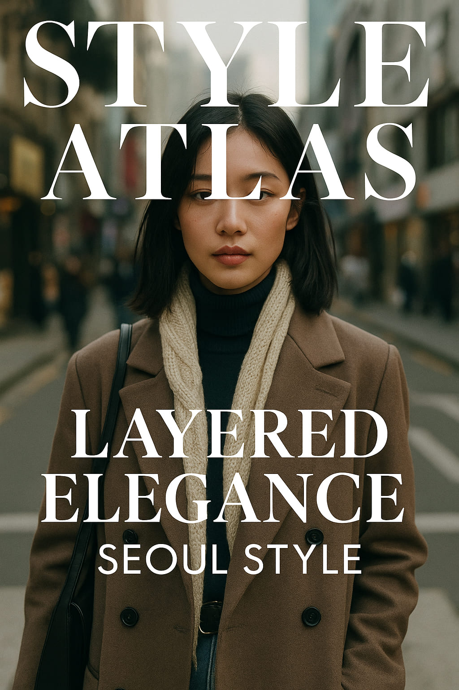
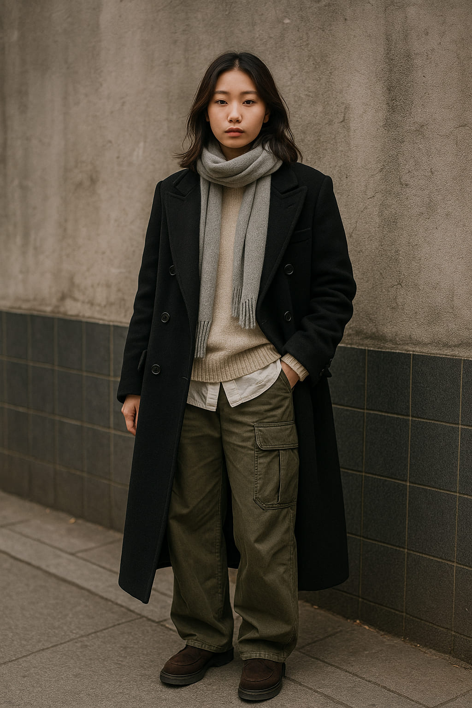
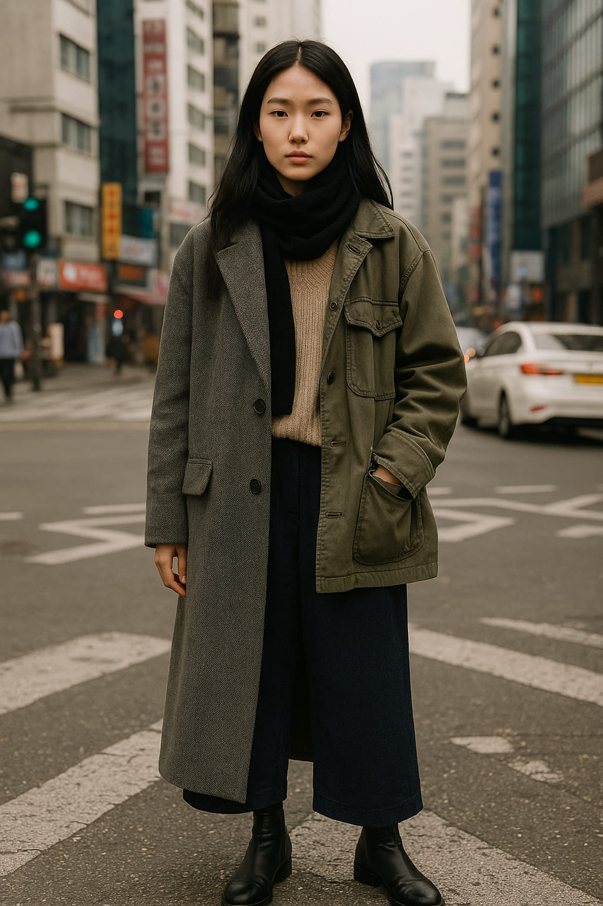
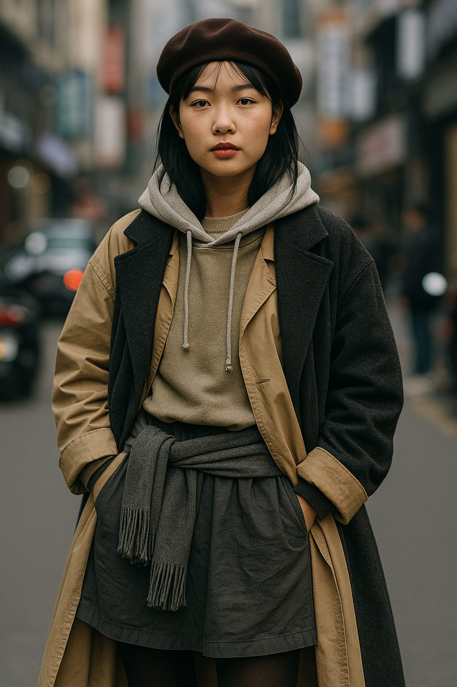

Seoul Summer Layers
How Korea’s capital is redefining heatwave fashion one outfit at a time.
There’s a reason Seoul has become one of the most photographed cities in the world when it comes to street style. The people here don’t just get dressed—they curate. And this summer, a fascinating contradiction is taking center stage: layers in the heat.
“In Seoul, summer doesn’t mean minimal. It means strategic. The heat is a canvas, not a constraint.”
Why Layering in Summer?
At first glance, the idea of putting on more clothing in humid weather seems counterintuitive. But for Seoulites, it's about finesse, flow, and self-expression. Think sheer fabrics, light trench coats, oversized shirts draped effortlessly over crop tops, and vests layered on tanks—not to hide, but to highlight.
The trend isn't just fashion-forward, it’s cultural. In Korean style philosophy, coverage often equates to elegance. Sun protection, modesty, and fluid silhouettes are part of the everyday dialogue between comfort and creativity.
The Neighborhoods Defining the Look
- Hongdae: Where vintage meets Gen Z remix culture. Expect thrifted mesh cardigans over shorts, lace camis under denim jackets, and bandanas as shoulder wraps.
- Garosu-gil: Minimalist luxury with breathable layers—cream-toned blazers over ribbed bodysuits, or monochrome linen twinsets that flirt with structure and airiness.
- Itaewon: Eclectic and global, layering here is bold. Net tops over bralettes, cropped hoodies on halters, and utility vests on bodycon dresses—it’s chaos, styled to perfection.
Mesh and denim meeting in the middle of a humid Seoul afternoon.
The Fabric Formula
Layering in Seoul’s summer isn’t about bulk—it’s about breathability. The fashion crowd embraces materials like seersucker, voile, gauze cotton, organza, and mesh. These fabrics allow movement, air, and playfulness without compromising on visual impact.
“Lightweight layers give you more styling range without turning you into a puddle by noon.” — Kim Soyoung, fashion curator at K-Style Hub
Layered organza catching the light on a late afternoon stroll.
The Genderless Edge
Layering in Seoul is deeply androgynous. You’ll often see flowing silhouettes and unstructured tailoring embraced by everyone. Shirt-dresses styled open like coats, wide-leg pants beneath tunic-length tees, and structured vests over fluid maxis—all intentionally designed without gender binary.
Accessories That Complement
No Seoul layering story is complete without the finishing touches. Think micro bags worn across oversized shirts, beaded necklaces peeking through chiffon scarves, or wide visors topping double-layered tanks. Accessories help direct the eye through layers, like punctuation in a sentence.
Soft silhouettes and strong outlines walk side by side in Itaewon.
The Influence of K-Drama & K-Pop
On-screen style is off-screen reality in Seoul. K-pop idols and K-drama leads regularly sport summer layers that fans quickly mirror. The double-shirt looks in airport paparazzi photos, or soft trench silhouettes in romantic dramas, all filter into daily looks.
Breathable layers as seen in the Seoul Metro—a catwalk of its own.
How to Try It Yourself
- Start with a neutral base (a slip dress, a cotton tank & shorts, or a romper).
- Add a breathable top layer—think oversized shirt, open cardigan, or sheer blouse.
- Play with length: mix crop with longline, or short sleeves under mid-length coverups.
- Stick to 2–3 tones for cohesion, unless you’re going full Itaewon experimental.
- Anchor the look with a statement shoe or visor-style accessory.

Even the heat can’t melt Seoul’s obsession with detail.
Final Thoughts
Layering in summer is Seoul’s gentle rebellion. While the rest of the world strips down, Seoul doubles down—on creativity, on elegance, and on the idea that personal style doesn’t have to surrender to the weather.
This isn’t about trend. It’s about narrative dressing. And Seoul, this summer, is telling one of the most visually compelling stories we’ve seen.
Words by Style Atlas